HOMESTUCK RECAP #3
Act 4: Flight of the Paradox Clones
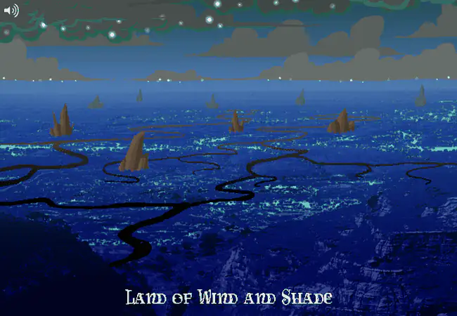
Act 4: Flight of the Paradox Clones
The kids’ game turns out to occupy an entire little cosmos called the INCIPISPHERE. At the center sits SKAIA. Around it are golden PROSPIT, the players’ planets in the MEDIUM, an asteroid belt called the VEIL, and purple DERSE. Beyond all of that is the FURTHEST RING.
Each player gets a planet and seven gates. John and Jade’s dreamselves live on Prospit’s moon. Rose and Dave’s live on Derse’s.
John’s FIRST GATE drops him onto LOWAS, the LAND OF WIND AND SHADE. The local salamanders use a PYXIS postal system, which PM enthusiastically teaches John to operate from her command station.
John sends DAD a replacement hat and requests his missing Sburb server disc. Then monsters nearly kill him, but Jade’s GRANDPA appears, shoots the monsters, and leaves without explaining his presence in the Medium.
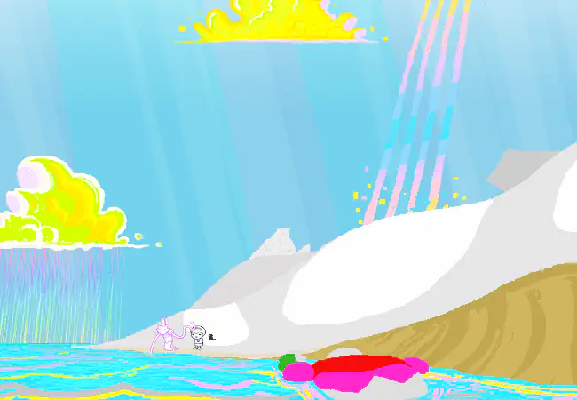
Rose’s house has landed on LOLAR, the LAND OF LIGHT AND RAIN. MOM immediately wanders off, leaving Rose to fight monsters and track down JASPERSPRITE.
Jaspersprite tells her that figuring out what her quest means is part of the quest. Rose would rather know who wrote the rules in the first place.
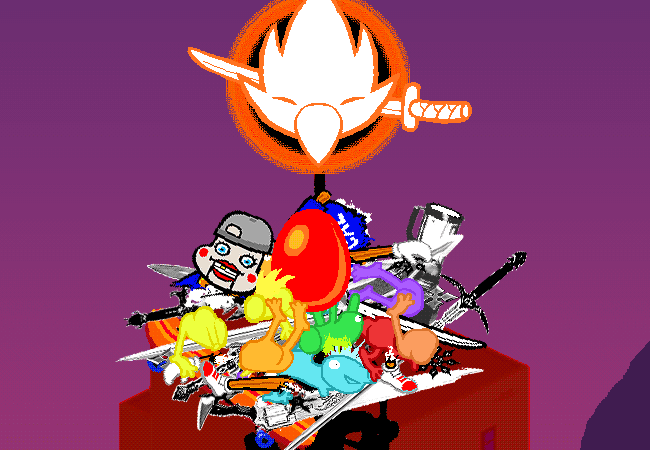
Back on Earth, Jade uses the lotus discs to connect as Dave’s SERVER PLAYER. Working through her dreambot while asleep, she prototypes his sprite with the impaled crow, creating CROWSPRITE.
Crowsprite steals Dave’s entry item, a red egg, and builds a nest on the radio tower. With a meteor on the way, Jade upgrades Dave’s alchemy setup while Dave tries to recover the egg.
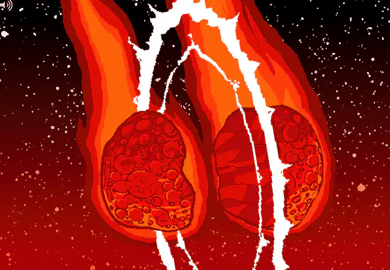
Dave climbs the tower. Crowsprite pecks him off. The egg falls too.
BRO lands on the incoming meteor and slices it in half with a katana while his rocket board catches Dave below. The egg cracks, and Dave’s apartment enters LOHAC, the LAND OF HEAT AND CLOCKWORK.
The trolls stop merely heckling and start meddling. gallowsCalibrator (GC) offers John a shortcut straight to his DENIZEN and helps him turn an old alchemy experiment into a working rocket pack.
John heads for the SEVENTH GATE, intending to skip almost his entire quest and confront its final enemy.
In one alternate future, John follows GC’s advice and is killed by his denizen. Jade never enters the Medium. Dave and Rose spend four more months pushing through a session they now know cannot succeed.
After spending significant time advancing in his session, Dave eventually develops time-traveling abilities and decides to go back in time to stop John. Rose cannot come with him, so she falls asleep and hopes her dreamself can carry something of her dead timeline back in time.
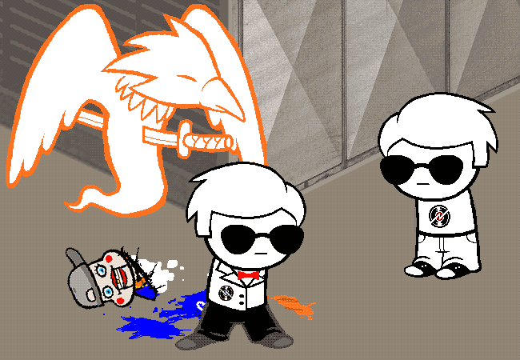
Future Dave returns to the moment just after his younger self enters the Medium. He gives his gear to his past self, jumps into Crowsprite, and becomes DAVESPRITE.
With two Daves now insisting that John not fight his denizen, John finally reconsiders and heads for his SECOND GATE instead. The failed future peels away.
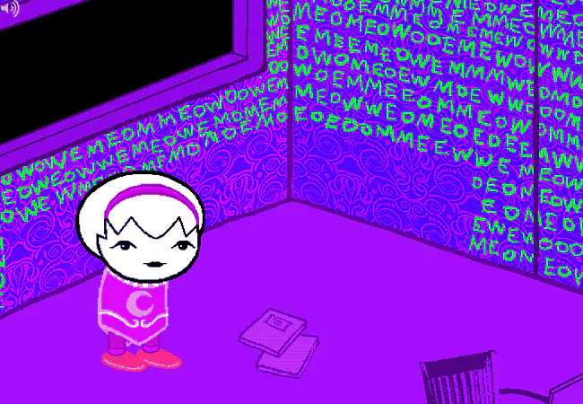
Something from that discarded future survives. Rose inherits fragments of her future self’s memories, and her dreamself finally wakes on DERSE.
Her walls are covered in the MEOW message Jaspers whispered years ago. It is a genetic code she has been writing without knowing why. Dream Dave’s walls, by comparison, are covered in drawings of his webcomic, SWEET BRO AND HELLA JEFF.
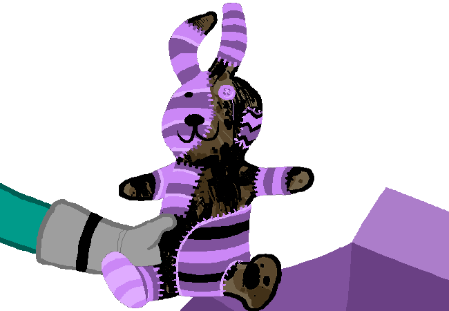
John’s Second Gate sends him directly into Rose’s bedroom on LOLAR. Rose is asleep, so their first in-person meeting fails to happen. John does find her unfinished birthday present, a patched version of the Con Air bunny.
He also answers a message from grimAuxiliatrix (GA) while pretending to be Rose, creating a mess Rose will have to untangle later. Then he takes the bunny, swaps pets with her, and leaves before she wakes.
Taking advantage of the game's alchemy devices, Dave creates a copy of Rose’s private journals, including her wizard story and a notebook containing the MEOW code. He uses the juice-stained Sburb envelopes as bookmarks.
Meanwhile, voices from the FURTHEST RING tell Rose to burn her own copy of the code. Derse dreamers hear these beings directly, just as Prospit dreamers see visions in Skaia’s clouds. Dave’s copy is still intact.
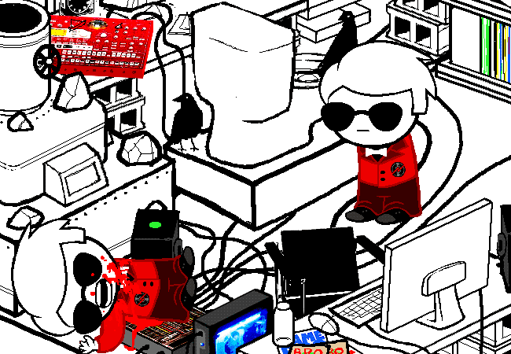
The DRACONIAN DIGNITARY, Derse’s counterpart to Diamonds Droog from the Midnight Crew, steals Rose’s journals from Dave’s room. One Dave tries to rewind time and stop him. That Dave is promptly killed.
The surviving Dave comes home to his own corpse. Seeing what happened to the Dave who tried to stop the theft, he decides against making the same trip.
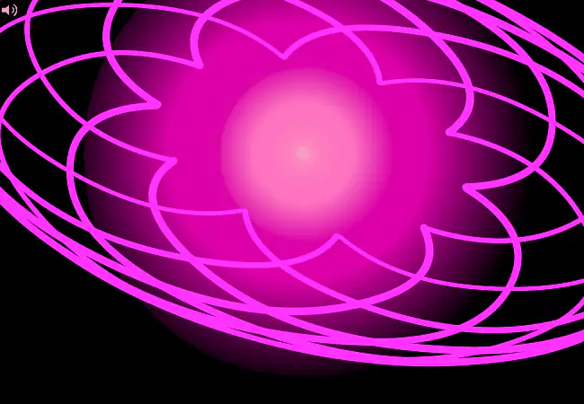
Rose’s patience with the game eventually runs out. While Dave advances through his FIRST GATE, Rose deliberately destroys hers.
She abandons her GameFAQs walkthrough, sends it into the FURTHEST RING, and decides to look for answers on her own terms rather than keep following a quest she no longer trusts.
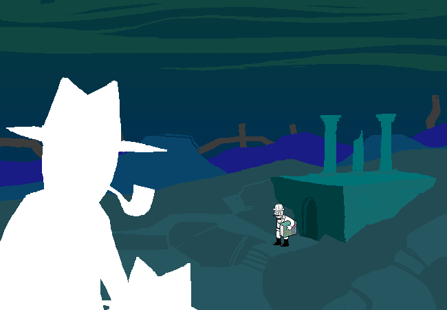
The guardians have been having their own adventure this entire time. DAD gets his fresh hat and meets GRANDPA, who has recovered COLONEL SASSACRE’S BOOK. MOM and MAPLEHOOF find their way out of LOLAR.
They converge at a laboratory in the VEIL, then leave together aboard Grandpa’s battleship bound for Skaia.
Dream Rose throws LIL CAL out of Dream Dave’s tower. BRO’s wandering rocket board catches the puppet, attracting the attention of the AUTHORITY REGULATOR, a Dersite agent.
The Regulator follows Cal through a transportalizer to the Veil laboratory, takes the rocket board, and rides off into the asteroid belt.
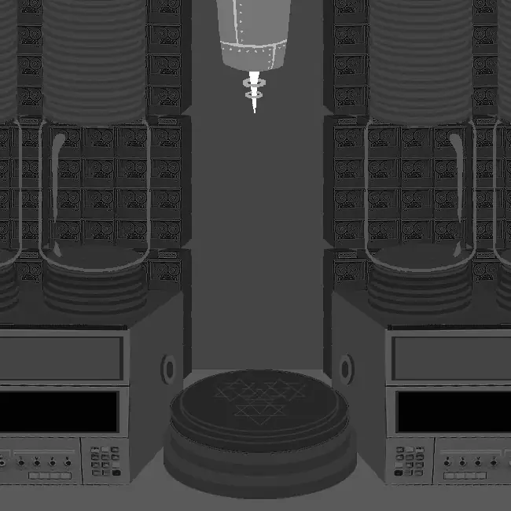
John reaches the Veil laboratory after everyone else has left. Its ECTOBIOLOGY equipment can collect genetic material from people who cannot safely be pulled out of the past, producing PARADOX SLIME instead.
The machine is already locked onto NANNA, GRANDPA, BRO, and MOM. John samples all four and activates the machine.
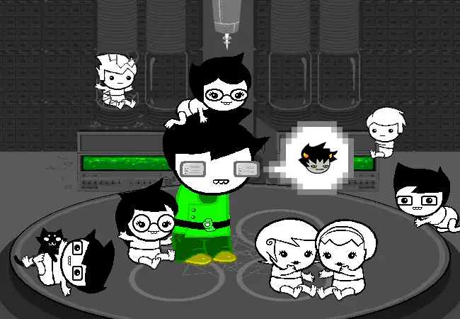
The machine produces baby clones of all four guardians. Then it combines Nanna with Grandpa to make JOHN and JADE, and Bro with Mom to make DAVE and ROSE.
John has just created himself, his friends, and the people who raised them. All eight babies are destined to reach Earth by meteor and grow into the kids and guardians we already know. The family tree is now a circle.
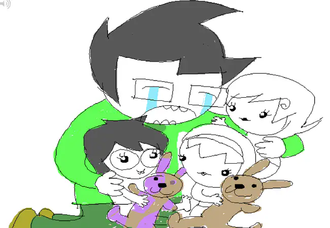
carcinoGeneticist (CG) explains that he did the same thing in the trolls’ session. He also warns that JACK NOIR will trigger the RECKONING too early, wrecking the kids’ chances of winning.
John turns his attention to the babies and reenacts the reunion from Con Air. Each baby latches onto an object or animal that will eventually reach Earth with them. Baby Jade gets the patched bunny from Rose’s room.
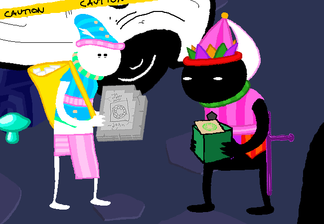
Meanwhile, the carapacians have been running an entire parallel plot. On LOWAS, the PARCEL MISTRESS is searching for a green package Dream Jade asked her to deliver to John.
The AUTHORITY REGULATOR has taken it from Dad’s car along with John’s Sburb disc. He releases the disc but keeps the package for his superiors. The Mistress follows him to DERSE.
The package winds up on JACK NOIR’s desk. The Parcel Mistress wants it back. Jack wants the crowns of the WHITE KING and WHITE QUEEN.
He hands her a REGISWORD and proposes a simple trade: two acts of treason for one parcel. She reluctantly takes the deal.
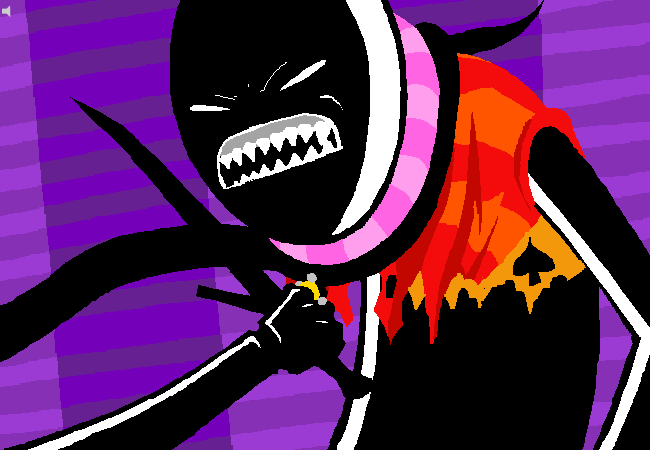
Jack opens the package and finds a weapon capable of killing the BLACK QUEEN. Already resentful of her authority and the clothes she makes him wear, he uses it to overthrow her.
Jack kills her, takes the RING OF ORBS FOURFOLD, and gains the powers of all four pre-entry prototypings: harlequin, cat, tentacles, and crow. The disgruntled bureaucrat has become the session’s biggest problem.
On PROSPIT, the WHITE QUEEN willingly abdicates. She gives the Parcel Mistress her crown and ring and sends her to collect the WHITE KING’S crown.
The COURTYARD DROLL, counterpart to Clubs Deuce, promptly steals the ring. Dream Jade notices, clobbers him, and takes it for safekeeping. It gives her no powers, so she returns to Dream John’s tower and waits for him to wake.
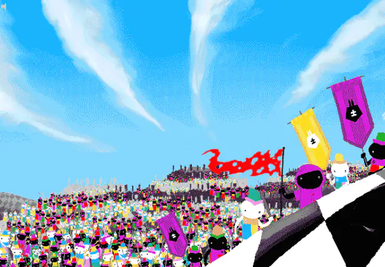
At Skaia’s center, the BATTLEFIELD has grown from a chessboard into an entire planet as the kernels were prototyped. Prospit and Derse continue their endless war across it.
When his farm is destroyed, the WARWEARY VILLEIN finally has enough. He rallies black and white carapacians together against both kingdoms and marches on the BLACK KING. For a moment, this seems promising.
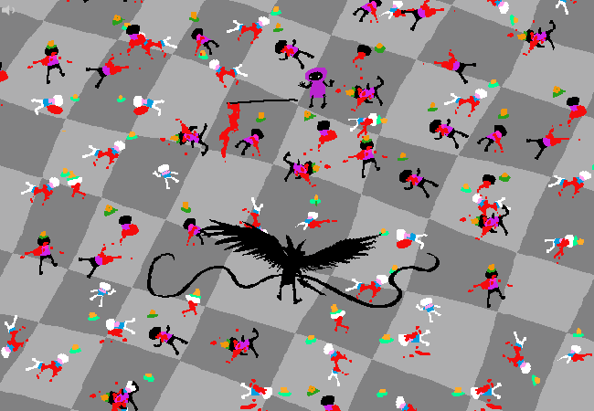
Jack interrupts the rebellion. He kills the BLACK KING, breaks the king’s scepter, and massacres the rebels. Only the Villein survives.
Jack sends branching tendrils of red energy across the Battlefield, devastating the landscape.
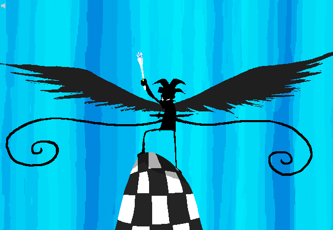
Elsewhere, the WHITE KING surrenders his crown and scepter to the Parcel Mistress. The HEGEMONIC BRUTE attacks and knocks the scepter into a river.
The Droll eventually retrieves it and brings it to Jack. Jack uses the white scepter to start the RECKONING, launching meteors from the Veil toward Skaia before the kids are remotely ready.
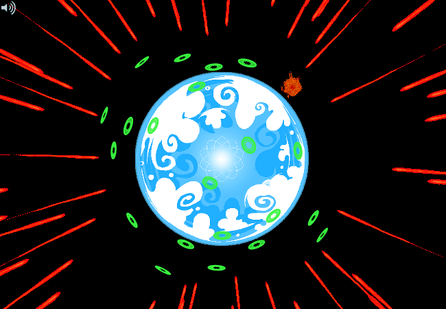
Skaia defends itself by opening portals that send the meteors to different moments in Earth’s history. The ectobiology lab places the eight babies and their belongings on separate meteors just before launch.
The babies are sent into Earth’s past so they can grow up and eventually help create themselves. Other carapacians are sent to later points in Earth’s history. The apocalypse that threatened the kids’ homes is also the delivery system that put everyone there in the first place.
Out in the Veil, the AUTHORITY REGULATOR discovers another meteor carrying an intact version of Jade’s frog temple. Inside is a second ectobiology lab and the same lotus time capsule.
Its monitors show that young Nanna and Grandpa also arrived on Earth by meteor, accidentally killed COLONEL SASSACRE in the process, and were raised by his widow, BETTY CROCKER. The lab is now targeting their dog, HALLEY.
The DRACONIAN DIGNITARY arrives with Rose’s stolen journals. He drops Dave’s juice-stained Sburb envelopes into the lotus capsule, where they will wait hundreds of millions of years for Jade to retrieve them.
Then he combines Halley’s genetic material with the MEOW code. BECQUEREL is born in a burst of green energy. The dog, the discs, and Jade’s ancient frog ruins have now all looped back to the same place.
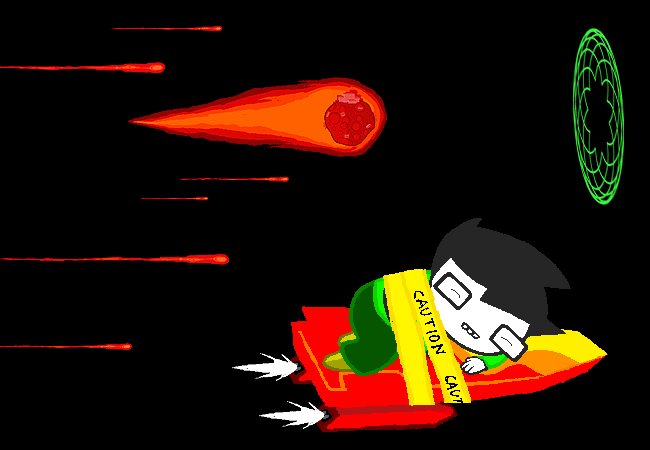
The Regulator flees Bec’s birth and returns to John’s laboratory meteor. John is asleep, the meteor is falling, and its transportalizers no longer work.
He straps John to BRO’s rocket board and launches him toward LOWAS. With no escape left for himself, the Regulator rides the meteor through one of Skaia’s portals to Earth.
With the RECKONING underway, everything starts happening at once. Jack attacks PROSPIT with the same destructive red energy and cuts the chain connecting the planet to its moon.
The moon begins falling toward the Battlefield with Dream Jade and the still-sleeping Dream John aboard. On LOHAC, BRO confronts Jack directly and holds him off with a sword.
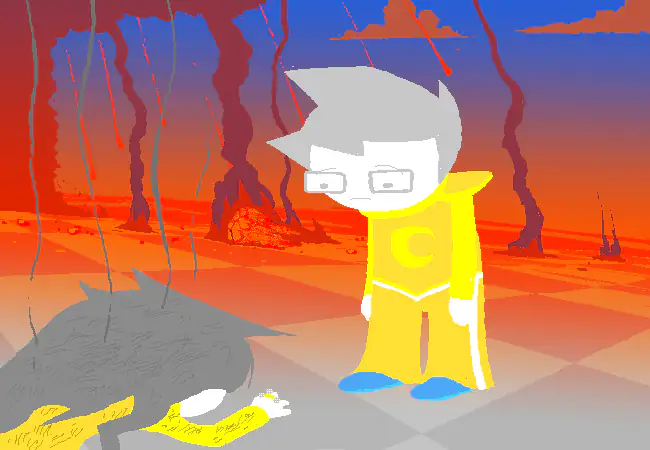
Dream Jade cannot wake John before the moon hits. At the last moment, she throws him clear and dies in the impact. Her DREAMBOT explodes on Earth, but waking Jade survives.
Dream John finally wakes on the ruined Battlefield. He finds Jade’s body and takes the WHITE QUEEN’S RING from her hand.
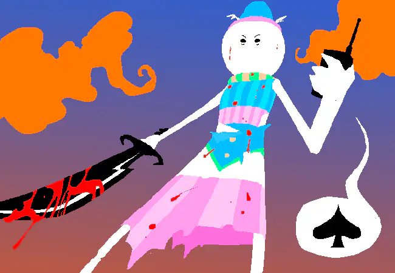
The Parcel Mistress kills the HEGEMONIC BRUTE and uses his radio to call Jack. She now has both white crowns, so the two finally complete their bargain and she gets the green package back.
She takes it straight to Dream John. Jade’s delivery instructions have brought the package to its destination.
Inside is Jade’s gift: the patched bunny, rebuilt as a heavily armed ROBOT BUNNY with help from her mysterious penpal. It is the same bunny John gave Baby Jade in the lab, now returned to him after years of upgrades.
Jack comes for the ring. The bunny uses its powerful weapons to drive him off and protect John.
GRANDPA lands on the Battlefield, drops off MOM and DAD, and collects Dream Jade’s body. He returns to Earth before the Reckoning and raises little Jade, eventually preserving her dreamself according to the family’s deeply unsettling taxidermy tradition.
His old laboratory also contains another souvenir from the Medium: the FOURTH WALL stolen from Jack’s office, an impossible screen that points somewhere outside the story.
The carapacians’ timelines finally line up. The WARWEARY VILLEIN becomes the WAYWARD VAGABOND. The PARCEL MISTRESS becomes the PEREGRINE MENDICANT. The AUTHORITY REGULATOR becomes the AIMLESS RENEGADE. The abdicated WHITE QUEEN becomes the WINDSWEPT QUESTANT.
This is why AR stopped shooting when he recognized Bec’s face on WV’s pumpkin. The Exiles make peace, rebuild their tiny civilization, and use the command stations to guide the kids in the past.
When the WINDSWEPT QUESTANT arrives at the ruins, WV and AR offer her a crown made from mailboxes. She declines and places it on PM instead, honoring the delivery mission PM carried through the collapse of both kingdoms.
PM accepts the crown and becomes the Exiles’ new queen.
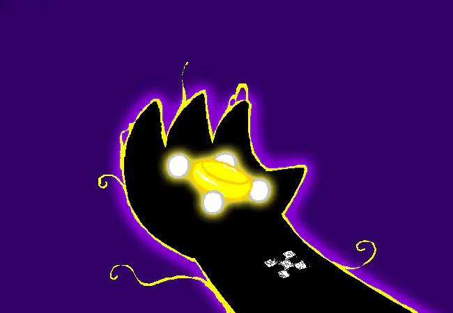
One last secret: WV has been carrying a RING OF ORBS FOURFOLD all along.
The kingdoms have fallen, Jack is loose, and the kids’ origins have looped back into place.
END OF ACT 4.